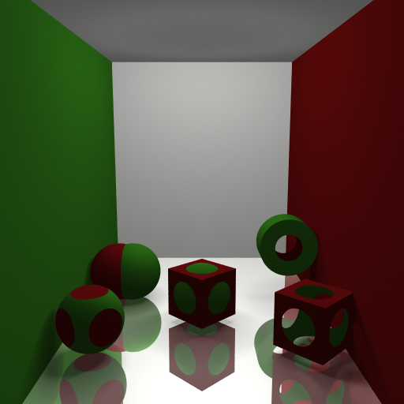

Ray Tracer
A ray tracer written in C++ which renders scenes described by a Lua based DSL. Written for the CS488 computer graphics course at the University of Waterloo.


A ray tracer written in C++ which renders scenes described by a Lua based DSL. Written for the CS488 computer graphics course at the University of Waterloo.
Implemented extra primitives such as cones, cylinders, discs and torus'.
Union, intersection and difference constructive solid geometry primitives were added to the ray tracer.
Soft shadows were implemented using my modelling light sources as area lights. Multiple shadow rays were cast to a uniformly distributed random point on the area light and the results were averaged to produce the soft shadows.